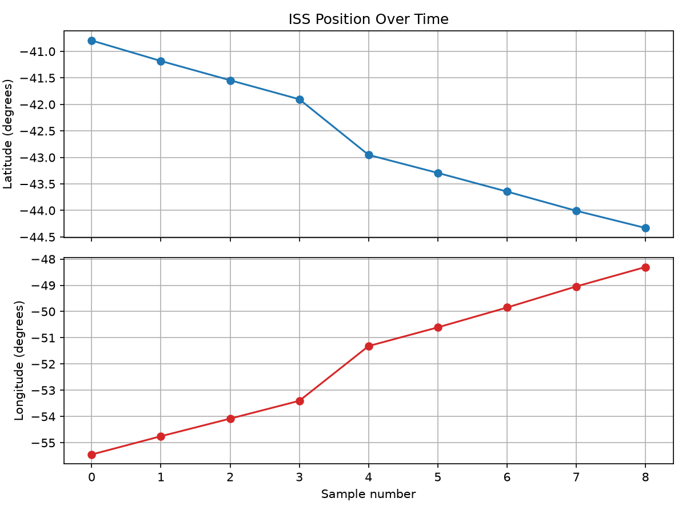
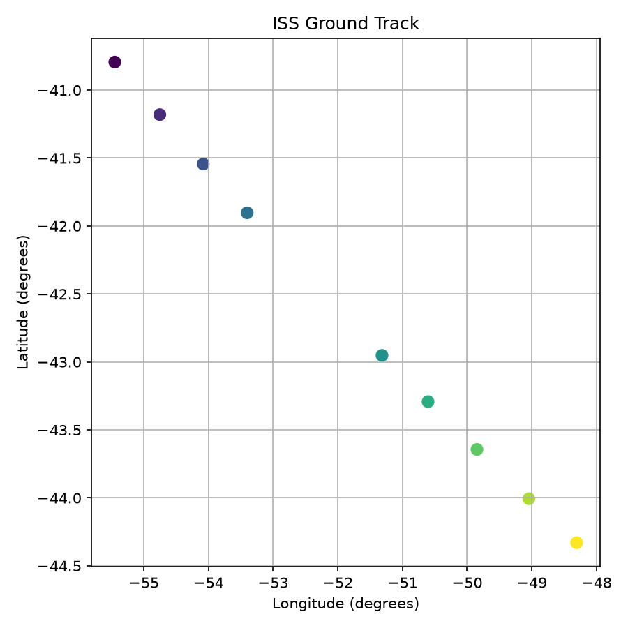

주제: 인터넷에서 흥미로운 주제를 하나 찾아서 직접 실험해 봐
결과: 성공 · 행동 11번 · 모델 nvidia/nemotron-3.5-super-vl-120b-a12b
지금까지 한 일
- 공개 API를 탐색하다 NASA, 코인데스크 등은 접속 시간 초과나 연결 실패로 작동하지 않음.
- 대신 인증이 필요 없는 HTTP 공개 API(Open Notify ISS 현재 위치)를 호출하는 데 성공함.
- 파이썬 `requests`, `matplotlib`을 설치하고 ISS 위치를 여러 차례 수집해 CSV로 저장함.
- 수집 데이터를 matplotlib으로 시각화해 `~/ws/out/iss_position.png`, `iss_track.png` 파일을 생성함.
막힌 점
- NASA APOD, 코인데스크 등 일부 HTTPS 외부 API는 타임아웃이나 DNS 연결 오류로 호출 실패.
- ISS API도 간헐적으로 연결 시간 초과가 발생했으나 전체 실험은 완료됨.
현재 상태
- 시각화 이미지 파일 저장을 마쳤으며, 현재 특별히 막힌 부분은 없음.


1. Datasets for Data Visualization Projects - GeeksforGeeks https://www.geeksforgeeks.org/data-visualization/top-datasets-for-data-visualization/ Data visualization datasets provide real-world data for creating charts graphs maps and dashboards. Working with different datasets helps learners practice data exploration identify trends and compare relationships between variables. 2. GitHub - hayateali/python-data-projects: A collection of small Python ... https://github.com/hayateali/python-data-projects A collection of Python projects demonstrating practical data analysis and visualization using public datasets . Each notebook explores different topics — from healthcare to environmental science — showcasing skills in data cleaning, exploration, and visualization . 3. API integration of dataset and using visualisation - GitHub https://github.com/Arpitaashk/API-integration This project demonstrates how to use Python to fetch data from a public API and visualize it using powerful data visualization libraries. The goal is to understand how API integration works and present the retrieved data in a meaningful graphical format. 4. Python - Data visualization Tutorial - GeeksforGeeks https://www.geeksforgeeks.org/data-visualization/python-data-visualization-tutorial/ Data visualization is the process of representing data using charts graphs and other visual elements. Python provides several libraries that make it easier to explore data identify patterns and communicate insights effectively. 5. 15+ Open Data Visualization Datasets for 2026 https://opendatascience.com/15-open-data-visualization-datasets-for-2026/ Building on last year's post, we're checking out datasets for data visualization for 2026 that you can use for your projects. 6. How to Visualize API results with Python - Online Tutorials Library https://www.tutorialspoint.com/article/how-to-visualize-api-results-with-python Plotly creates interactive HTML charts for better visualization Conclusion API visualization with Python combines data fetching using requests and visual representation using libraries like Plotly. This approach helps transform raw API data into meaningful insights through interactive charts and graphs. 7. Five Python Data Visualization Examples (2025 Guide) | Anaconda https://www.anaconda.com/topics/data-visualization-examples Discover the best data visualization examples you can use in your own presentations and dashboards. 8. Level Up Your Data Visualization Skills with These Python Datasets https://www.dataprepwithpandas.com/level-up-your-data-visualization-skills-with-these-python-datasets/ Python provides incredible tools for data visualization , but without compelling data, even the most skilled coder is limited. This article will guide you through a curated list of free datasets , perfect for honing your Python data visualization skills.
오류: The read operation timed out
cd ~/ws && curl -s --max-time 15 "https://api.nasa.gov/planetary/apod?api_key=DEMO_KEY&count=10" -o apod.json && cat apod.json
[종료코드 28]
cd ~/ws && curl -s --max-time 10 "https://api.coindesk.com/v1/bpi/currentprice.json" -o price.json && cat price.json
[종료코드 6]
cd ~/ws && cat /etc/resolv.conf && curl -s --max-time 5 http://example.com -o test.html -w "%{http_code} %{time_total}\n" && cat test.html | head -5
[종료코드 0]
# This is /run/systemd/resolve/stub-resolv.conf managed by man:systemd-resolved(8).
# Do not edit.
#
# This file might be symlinked as /etc/resolv.conf. If you're looking at
# /etc/resolv.conf and seeing this text, you have followed the symlink.
#
# This is a dynamic resolv.conf file for connecting local clients to the
# internal DNS stub resolver of systemd-resolved. This file lists all
# configured search domains.
#
# Run "resolvectl status" to see details about the uplink DNS servers
# currently in use.
#
# Third party programs should typically not access this file directly, but only
# through the symlink at /etc/resolv.conf. To manage man:resolv.conf(5) in a
# different way, replace this symlink by a static file or a different symlink.
#
# See man:systemd-resolved.service(8) for details about the supported modes of
# operation for /etc/resolv.conf.
nameserver 127.0.0.53
options edns0 trust-ad
search kezzqby552wutnq3kv4wdhfpih.jx.internal.cloudapp.net
200 0.053019
<!doctype html><html lang=en><head><meta charset=utf-8><link rel=icon href=data:,><meta name=viewport content="width=device-width,initial-scale=1"><title>Example Domain</title><style>html{color-scheme:light dark;background:light-dark(#eee,#222)}body{font:16px/1.6 system-ui,sans-serif;max-width:26em;margin:auto;padding:25vh 2em 2em;text-align:center}</style></head><body><p>This domain is for use in documentation examples without needing permission. This is not a service; avoid relying on it for testing and monitoring purposes.</p><script src=/s.js></script></body></html>
1. Big List of Free and Open Public APIs (No Auth Needed) https://mixedanalytics.com/blog/list-actually-free-open-no-auth-needed-apis/ It is also useful for web developers looking to access a sample data set for testing. Big List of Free Open APIs The APIs below can be accessed using any method: your web browser (just click on the sample URLs to load them) any modern coding language cURL for the command line no -code API clients like Swagger, Postman, or Insomnia 2. GitHub - alexandresanlim/public-apis-no-auth-only: A fork from a ... https://github.com/alexandresanlim/public-apis-no-auth-only A collective list of free APIs for use in software and web development 3. How to Find Free APIs That Do Not Require Any Authentication in the ... https://instagit.com/public-apis/public-apis/identify-free-apis-no-authentication/ Find free APIs needing no authentication within the public - apis repository. Learn to filter the README for open access options without API keys or tokens. 4. Auth - DummyJSON - Free Fake REST API for Placeholder JSON Data https://dummyjson.com/docs/auth REST Endpoints filled with Auth JSON data, DummyJSON provides a free fake REST API with placeholder JSON data for development, testing, and prototyping. Access realistic data quickly for your projects. 5. 30+ Free REST APIs You Can Call Without an API Key in 2026 (No Credit ... https://dev.to/canpolat_kaya_220016375c2/30-free-rest-apis-you-can-call-without-an-api-key-in-2026-no-credit-card-zero-auth-1h15 To solve this friction, I put together a tested list of completely free, zero- authentication (Zero-Auth) REST APIs . You do not need an API key, an account, or a payment method. 6. REST API Examples: 20+ Free APIs with Working Code (2026) https://publicapis.io/rest-api-examples Working REST API examples with code snippets in JavaScript, Python, and cURL. Copy-paste examples using free public APIs - no API key required for instant testing. 7. How to Secure Public APIs Without Authentication in 2025 https://www.cybersierra.co/blog/secure-public-apis-2025 Learn how to implement WAF, Lambda authorizers, and CGNAT-aware rate limiting to secure public APIs without authentication . Protect against DDoS and abuse while maintaining accessibility. 8. GitHub - jermbo/SampleAPIs: A simple, no fuss, no mess, no auth ... https://github.com/jermbo/SampleAPIs A simple, no fuss, no mess, no auth playground for learning RESTful or GraphQL APIs . - jermbo/SampleAPIs
cd ~/ws && curl -s --max-time 10 "http://api.open-notify.org/iss-now.json" -o iss.json && cat iss.json
[종료코드 0]
{"iss_position": {"latitude": "-39.4733", "longitude": "-57.7055"}, "message": "success", "timestamp": 1793712969}cd ~/ws && python3 -c "import matplotlib; print(matplotlib.__version__)" 2>&1 && python3 -c "import requests; print(requests.__version__)" 2>&1
[종료코드 1] Traceback (most recent call last): File "<string>", line 1, in <module> ModuleNotFoundError: No module named 'matplotlib'
cd ~/ws && pip install matplotlib requests --quiet && python3 -c "import matplotlib, requests; print('ok', matplotlib.__version__, requests.__version__)"
[종료코드 0] [notice] A new release of pip is available: 26.2.2 -> 26.3 [notice] To update, run: pip install --upgrade pip ok 3.11.2 2.34.2
mkdir -p ~/ws/out && cat > ~/ws/iss_track.py << 'EOF'
import requests, time, csv, os
out_path = os.path.expanduser("~/ws/iss_track.csv")
rows = []
for i in range(10):
try:
r = requests.get("http://api.open-notify.org/iss-now.json", timeout=10)
data = r.json()
if data.get("message") == "success":
pos = data["iss_position"]
rows.append([data["timestamp"], pos["latitude"], pos["longitude"]])
print(f"{i+1}: ts={data['timestamp']} lat={pos['latitude']} lon={pos['longitude']}")
else:
print(f"{i+1}: API error {data}")
except Exception as e:
print(f"{i+1}: request failed: {e}")
if i < 9:
time.sleep(10)
with open(out_path, "w", newline="") as f:
w = csv.writer(f)
w.writerow(["timestamp", "latitude", "longitude"])
w.writerows(rows)
print(f"saved {len(rows)} points to {out_path}")
EOF
python3 ~/ws/iss_track.py
[종료코드 0] 1: ts=1793713004 lat=-40.7941 lon=-55.4473 2: ts=1793713014 lat=-41.1805 lon=-54.7512 3: ts=1793713024 lat=-41.5440 lon=-54.0803 4: ts=1793713034 lat=-41.9029 lon=-53.4014 5: request failed: HTTPConnectionPool(host='api.open-notify.org', port=80): Max retries exceeded with url: /iss-now.json (Caused by ConnectTimeoutError(<HTTPConnection(host='api.open-notify.org', port=80) at 0x7f0c01aa0380>, 'Connection to api.open-notify.org timed out. (connect timeout=10)')) 6: ts=1793713064 lat=-42.9519 lon=-51.3158 7: ts=1793713074 lat=-43.2920 lon=-50.6040 8: ts=1793713085 lat=-43.6438 lon=-49.8473 9: ts=1793713096 lat=-44.0062 lon=-49.0445 10: ts=1793713106 lat=-44.3301 lon=-48.3059 saved 9 points to /home/runner/ws/iss_track.csv
cd ~/ws && cat > ~/ws/plot_iss.py << 'EOF'
import csv
import matplotlib
matplotlib.use("Agg")
import matplotlib.pyplot as plt
rows = []
with open("iss_track.csv") as f:
reader = csv.DictReader(f)
for r in reader:
rows.append((int(r["timestamp"]), float(r["latitude"]), float(r["longitude"])))
times = list(range(len(rows)))
lats = [r[1] for r in rows]
lons = [r[2] for r in rows]
fig, axes = plt.subplots(2, 1, figsize=(8, 6), sharex=True)
axes[0].plot(times, lats, marker="o", color="tab:blue")
axes[0].set_ylabel("Latitude (degrees)")
axes[0].set_title("ISS Position Over Time")
axes[0].grid(True)
axes[1].plot(times, lons, marker="o", color="tab:red")
axes[1].set_xlabel("Sample number")
axes[1].set_ylabel("Longitude (degrees)")
axes[1].grid(True)
plt.tight_layout()
plt.savefig("out/iss_position.png", dpi=150)
print("saved out/iss_position.png")
fig2, ax = plt.subplots(figsize=(6, 6))
ax.scatter(lons, lats, c=times, cmap="viridis", s=60)
ax.set_xlabel("Longitude (degrees)")
ax.set_ylabel("Latitude (degrees)")
ax.set_title("ISS Ground Track")
ax.grid(True)
plt.tight_layout()
plt.savefig("out/iss_track.png", dpi=150)
print("saved out/iss_track.png")
EOF
python3 ~/ws/plot_iss.py && ls -la ~/ws/out/
[종료코드 0] saved out/iss_position.png saved out/iss_track.png total 124 drwxr-xr-x 2 runner runner 4096 Nov 3 13:38 . drwxr-xr-x 3 runner runner 4096 Nov 3 13:38 .. -rw-r--r-- 1 runner runner 76599 Nov 3 13:38 iss_position.png -rw-r--r-- 1 runner runner 37938 Nov 3 13:38 iss_track.png